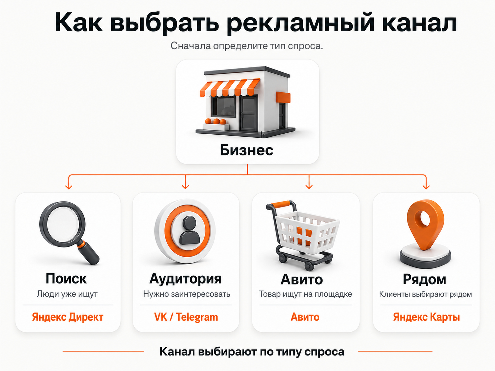
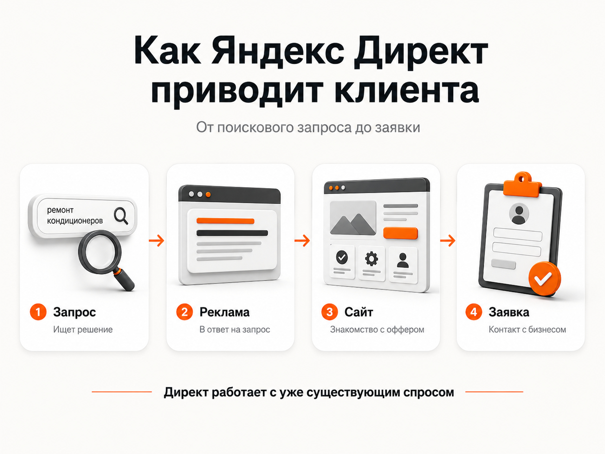
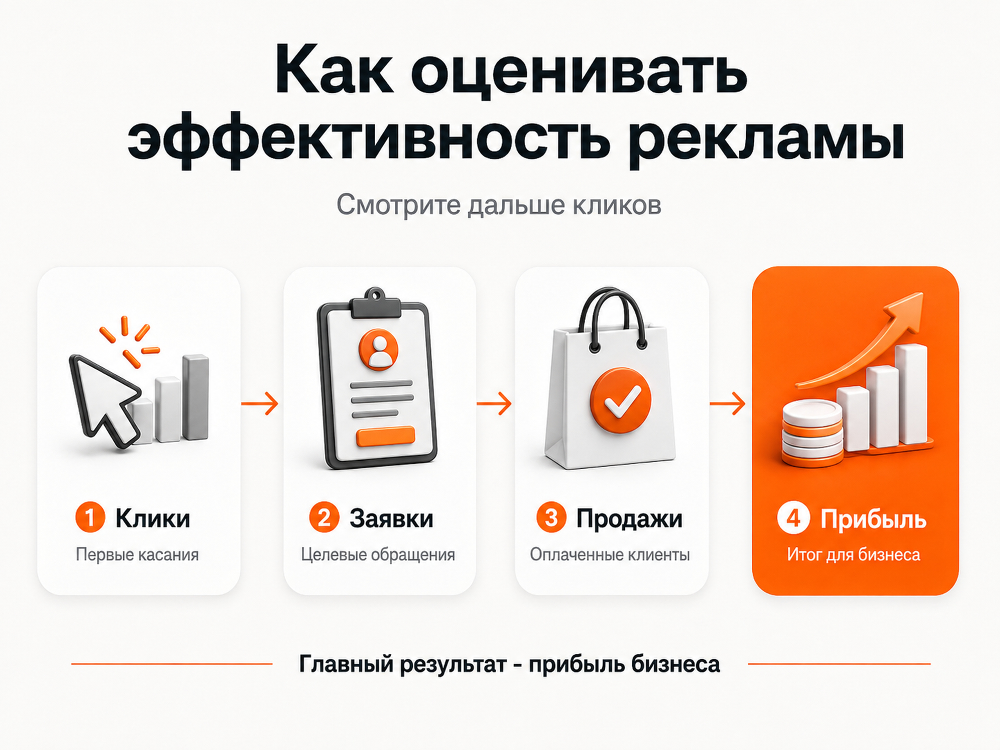

Блог о платном трафике
Какая реклама самая эффективная для бизнеса
Если бизнес только открылся и нужно получить первых клиентов, я бы в большинстве случаев сначала проверял Яндекс Директ. Особенно если люди уже ищут ваш товар или услугу в интернете.
Причина простая: на поиске реклама показывается человеку в тот момент, когда он сам вводит запрос вроде «ремонт кондиционеров», «купить кухню на заказ» или «бухгалтерские услуги для ООО». То есть потенциальный клиент уже знает, что ему нужно, и ищет исполнителя или продавца. Именно поэтому поисковая реклама часто становится хорошей отправной точкой для нового бизнеса.
Но универсально самой эффективной рекламы не существует. У одного бизнеса основной поток продаж приходит из Директа, у другого из Авито, у третьего из Telegram. Выбирать площадку нужно не по популярности, а по тому, где и как клиент ищет ваш продукт.
От чего на самом деле зависит эффективность рекламы
Представим два бизнеса.
Первый занимается ремонтом квартир. Человек хочет сделать ремонт и открывает Яндекс, чтобы найти подрядчика. Здесь уже существует сформированный спрос. До такого клиента проще всего добраться через поиск.
Второй продает необычный обучающий курс, о существовании которого потенциальный покупатель раньше вообще не задумывался. Запросов в поиске может быть мало. Такому продукту иногда эффективнее сначала показать рекламу нужной аудитории в социальной сети или Telegram, объяснить ценность продукта и только потом вести человека к покупке.
Поэтому перед выбором рекламы я смотрю прежде всего на четыре вещи:
- ищут ли товар или услугу прямо сейчас;
- где находится целевая аудитория;
- насколько быстро человек принимает решение;
- можно ли нормально посчитать заявки и продажи.
Последний пункт особенно важен. Реклама с дешевыми кликами может оказаться бесполезной, если эти посетители ничего не покупают.
Какие рекламные каналы есть у бизнеса в 2026 году

Если сильно упростить выбор для российского бизнеса, основные направления выглядят так:
Яндекс Директ - когда есть сформированный спрос на товар или услугу.
VK Реклама - когда продукт можно продвигать через интересы, аудитории и креативы.
Telegram Ads - когда целевая аудитория активно читает тематические Telegram-каналы.
Авито - когда товар или услугу действительно ищут внутри Авито.
Яндекс Карты - когда клиенты выбирают компании рядом с собой.
SEO - когда есть поисковый спрос и можно ждать долгосрочного результата.
Блогеры и нативные размещения - когда покупателю важны доверие, рекомендации или демонстрация продукта.
Я бы не пытался запускать все эти инструменты одновременно. Для нового бизнеса обычно разумнее выбрать один основной канал, получить статистику, понять экономику и только после этого расширять рекламу.
Почему я чаще всего начинаю с Яндекс Директа

Для бизнеса с существующим спросом у Директа есть принципиальное преимущество: он позволяет работать с людьми, которые уже находятся относительно близко к покупке.
Например, человек вводит:
«установить натяжной потолок»
«курсы английского онлайн»
«купить промышленный компрессор»
«юрист по банкротству»
В каждом случае потребность уже существует. Не нужно сначала несколько недель убеждать пользователя, что ему вообще нужен такой продукт.
Реклама может размещаться на поиске Яндекса, в Рекламной сети Яндекса, Картах и других доступных местах показа. При этом поиск и РСЯ решают немного разные задачи.
На поиске реклама отвечает на конкретный запрос пользователя. В РСЯ объявления показываются на площадках сети аудитории, которую алгоритмы считают подходящей.
Поэтому я обычно рассматриваю Директ не как одну рекламную площадку, а как набор разных способов работать со спросом.
статья «Контекстная или таргетированная реклама: что выбрать в 2026 году»
Когда Яндекс Директ может не сработать
Сам факт запуска Директа ничего не гарантирует.
Например, проблемы могут возникнуть, если:
- продукт почти никто не ищет;
- цена сильно выше рынка без понятного объяснения;
- сайт плохо продает;
- реклама ведет на неподходящую страницу;
- бизнес долго отвечает на заявки;
- нет нормальной аналитики;
- рекламного бюджета недостаточно для получения данных и обучения стратегии.
Можно идеально настроить кампанию и получить плохие продажи, если само предложение неконкурентоспособно.
Поэтому я всегда разделяю две вещи: эффективность рекламного канала и эффективность всей связки.
Связка выглядит примерно так:
спрос -> реклама -> сайт -> заявка -> обработка менеджером -> продажа
Проблема на любом этапе снижает итоговый результат.
главная страница с описанием работы и кейсами
VK Реклама
VK Реклама работает по другому принципу. Здесь чаще приходится сначала находить подходящую аудиторию, привлекать внимание креативом и формировать интерес к предложению.
Это может быть полезно для товаров и услуг, которые хорошо демонстрируются визуально, массовых B2C-продуктов, мероприятий, образовательных проектов и других направлений, где потенциального клиента можно определить по его характеристикам и интересам.
Но человек, который листает ленту, обычно не находится в таком же состоянии спроса, как пользователь, который несколько секунд назад написал в Яндексе название нужной услуги.
Поэтому для бизнеса с явным поисковым спросом я чаще рассматриваю VK Рекламу как дополнительный источник трафика, а не как первый канал.
статья «Реклама ВК или Яндекс Директ: что лучше выбрать для бизнеса»
Telegram Ads
Telegram Ads интересен там, где аудитория бизнеса хорошо представлена в тематических каналах.
Например, можно работать с предпринимателями, инвесторами, маркетологами, специалистами определенной профессии или аудиторией конкретной тематики.
Но Telegram Ads тоже нельзя автоматически считать более эффективным только потому, что Telegram популярен.
Здесь большое значение имеет сама воронка. Пользователь может перейти в канал или бота, посмотреть контент и купить продукт значительно позже. Для простой услуги формата «нужно прямо сейчас» такая схема иногда оказывается лишней.
Telegram особенно интересен там, где продукт требует знакомства, прогрева или регулярного контакта с аудиторией.
Авито
Авито может давать отличный результат, если люди привыкли искать ваш товар или услугу непосредственно на этой площадке.
Это касается большого количества товаров, ремонта, строительства, бытовых услуг, транспорта, недвижимости и других категорий.
Но принцип очень простой: сначала нужно проверить наличие спроса.
Если потенциальные клиенты не рассматривают Авито как место для поиска вашего продукта, никакая настройка рекламы не исправит фундаментальную проблему.
Например, пытаться сделать Авито главным источником заявок для сложного корпоративного консалтинга обычно значительно менее логично, чем протестировать поиск Яндекса.
статья «Авито или Яндекс Директ: что выбрать для рекламы бизнеса»
Яндекс Карты
Для локального бизнеса я отдельно проверял бы Карты.
Ресторан, стоматология, автосервис, салон красоты или ремонтная мастерская часто выбираются по географическому принципу. Человек ищет компанию рядом, смотрит рейтинг, фотографии, отзывы, время работы и только после этого принимает решение.
В таком случае карточка организации становится полноценной точкой привлечения клиентов.
Для бизнеса, работающего по всей России, значение Карт обычно значительно меньше. Для локальной компании ситуация может быть обратной.
SEO и контент

SEO нельзя напрямую ставить в один ряд с платной рекламой, но при выборе источников клиентов его точно нужно учитывать.
Основное отличие - скорость.
Контекстную рекламу можно запустить и начать получать трафик практически сразу после запуска и прохождения модерации. SEO требует работы с сайтом, страницами, статьями, технической оптимизацией и временем на индексацию и изменение позиций.
Зато успешное SEO со временем может формировать стабильный дополнительный источник посетителей без оплаты каждого отдельного перехода.
Я бы не выбирал между SEO и контекстной рекламой по принципу «или одно, или другое». Эти инструменты решают разные задачи и хорошо работают параллельно.
статья «SEO или контекстная реклама: что выбрать для продвижения бизнеса»
Реклама у блогеров
Интеграции у блогеров хорошо работают в продуктах, где большое значение имеют доверие, личная рекомендация или демонстрация.
Но этот канал сложнее анализировать.
Один блогер может привести продажи, другой с похожим количеством подписчиков не даст почти ничего. Реальную эффективность конкретного размещения заранее определить трудно.
Поэтому для только что открывшегося бизнеса с ограниченным бюджетом я редко считал бы блогеров самым очевидным первым источником клиентов. Сначала желательно получить более предсказуемую систему привлечения спроса.
Какая реклама лучше для малого бизнеса
Если бизнес небольшой и рекламный бюджет ограничен, главная ошибка - пытаться присутствовать везде.
Не нужно одновременно запускать Директ, VK, Telegram, Авито, покупать размещения у блогеров и заказывать SEO.
Деньги распределятся между большим количеством экспериментов, а нормальной статистики не будет ни по одному.
Я бы действовал так:
- Проверил, существует ли поисковый спрос.
- Если спрос есть, начал бы с Яндекс Директа.
- Если ниша активно представлена на Авито, параллельно проверил бы Авито.
- Если спрос нужно формировать, рассматривал бы VK Рекламу или Telegram Ads.
- SEO развивал бы отдельно как долгосрочный источник трафика.
Это не универсальная формула для любого бизнеса, но для новичка она значительно практичнее, чем случайный запуск пяти рекламных каналов.
Как понять, какая реклама действительно эффективна
Эффективность нельзя оценивать только по кликам.
Допустим, одна площадка дает клик за 30 рублей, другая за 100 рублей. На первый взгляд первая выглядит значительно лучше.
Но если со второй площадки люди чаще оставляют заявки и покупают, более дорогой трафик может приносить бизнесу больше денег.
Поэтому я смотрю дальше рекламного кабинета:
- сколько получено целевых заявок;
- сколько из них качественные;
- сколько клиентов совершили покупку;
- сколько стоит продажа;
- какую выручку и прибыль принесла реклама.
Для бизнеса итоговой метрикой всегда остаются деньги.
CTR, CPC и количество переходов нужны для анализа отдельных этапов рекламы. Но реклама с красивым CTR и нулем продаж эффективной не становится.
статья «CPS в маркетинге: что это и как считать стоимость продажи»
статья «Какая конверсия рекламы считается хорошей»
Что выбрать, если бизнес только открылся
Если вы только запускаете бизнес и пока вообще не знаете, где искать клиентов, начните с проверки спроса.
Введите в Яндексе запросы, которыми потенциальный покупатель может искать ваш товар или услугу. Посмотрите подсказки, поисковую выдачу, конкурентов и частотность запросов.
Если люди уже активно ищут такое предложение, Яндекс Директ будет одним из первых каналов, который я бы тестировал.
Если спроса практически нет, нужно искать место, где можно найти саму аудиторию: VK, Telegram, тематические площадки, блогеров.
Если продукт активно ищут на Авито, имеет смысл проверить Авито.
Если бизнес локальный, добавляется работа с Картами.
С этого и начинается нормальный выбор рекламы. Не с вопроса «какая площадка сейчас самая модная», а с вопроса «где находится человек в тот момент, когда ему может понадобиться мой продукт».
Частые вопросы
Какая реклама самая эффективная для малого бизнеса?
Если товар или услугу уже ищут в интернете, одним из первых вариантов я бы проверял Яндекс Директ. Он позволяет работать с существующим спросом. Для отдельных ниш эффективнее могут оказаться Авито, VK Реклама, Telegram Ads или Карты.
Какую рекламу лучше запустить первой?
Для бизнеса со сформированным поисковым спросом - контекстную рекламу в Яндекс Директе. Для продукта, который люди пока не ищут, чаще приходится использовать таргетированную и контентную рекламу, чтобы сначала сформировать интерес.
Нужно ли одновременно запускать несколько видов рекламы?
На старте обычно нет. Лучше получить достаточно данных по одному основному каналу, оценить заявки и продажи и затем подключать следующие источники трафика.
Можно ли рекламировать бизнес без собственного сайта?
Да. Для некоторых сценариев рекламный трафик можно вести не только на классический сайт. Но для многих услуг собственный сайт остается более удобной площадкой для презентации предложения и аналитики.
статья «Яндекс Директ без сайта: можно ли запустить рекламу и когда это имеет смысл»
Вывод
Самая эффективная реклама для бизнеса - та, которая приводит прибыльных клиентов по приемлемой для бизнеса стоимости.
Если у товара или услуги уже есть поисковый спрос, я в первую очередь смотрел бы в сторону Яндекс Директа. Это один из самых универсальных рекламных инструментов для российского бизнеса, потому что он позволяет работать с человеком уже в момент поиска нужного предложения.
VK Реклама, Telegram Ads, Авито, Карты, SEO и блогеры тоже могут давать хороший результат, но каждый из этих каналов сильнее зависит от конкретной ниши и поведения аудитории.
Поэтому начинать нужно не со списка рекламных площадок, а со спроса, экономики бизнеса и нормальной аналитики.